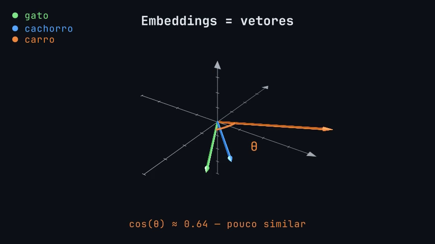

Lucas S. Vieira
Texto como números, busca e geração
Guilda de IA
create_agent encadeia chamadas automaticamenteAsyncExitStack"Semana passada ele ganhou ferramentas. Hoje aprende a ler."
LLMs não conhecem:
E agora?
RAG = Retrieval Augmented Generation
Buscar informações relevantes antes de gerar a resposta.
"RAG = buscar antes de responder."
O retrieval é o coração do RAG.
E a busca tem duas abordagens que se complementam:
Vamos ver cada uma separadamente, e depois juntar.
"Como o Google buscava antes de IA."
BM25 (Best Matching 25) é o algoritmo de busca lexical mais usado.
Está no Elasticsearch, no Lucene, no Sphinx…
E é mais inteligente do que parece.
score(q,D) = Σi IDF(qi) · f(qi,D) · (k1+1) / [ f(qi,D) + k1 · (1 − b + b · fieldLen / avgFieldLen ) ]
Parece assustador? Calma. Cada parte é bom senso. Vamos decompor:
🟢 IDF = Inverse Document Frequency — termos raros valem mais. "elefante" em poucos docs → IDF alto → vale mais. "the" em quase todos → IDF baixo → vale menos.
🔵 f(q,D) = quantas vezes o termo aparece no documento. Mais aparições = provavelmente mais relevante.
🟠 k₁ = saturação — a 1ª menção vale muito, a 10ª vale quase nada extra. "gato" 100 vezes ≠ 100× mais relevante que 1 vez. Default: k₁ = 1.2
🟣 b = quanto o tamanho do doc afeta o score. b = 0 → tamanho não importa. b = 1 → importa muito. Default: 0.75. Tweet com "gato" > livro de 300 páginas com "gato" 1 vez.
🔴 fieldLen/avgFieldLen = tamanho relativo à média. Doc curto acima da média → score sobe. Doc longo acima da média → score cai.
BM25 é bom senso codificado em matemática. Bom pra: nomes, termos técnicos, códigos, IDs. Mas não entende sinônimos.
E se a pessoa busca por "animal que faz miau" mas o documento diz "gato"?
BM25 não acha. Mas embeddings sim.
Cada texto vira um vetor — uma lista de números que captura significado.
| Texto | Vetor (simplificado) |
|---|---|
| "gato" | [0.2, 0.8, 0.1] |
| "cachorro" | [0.3, 0.7, 0.2] |
| "carro" | [0.9, 0.1, 0.3] |

"gato" e "cachorro" são mais próximos! "carro" está longe.
"Mesma direção" = ângulo pequeno entre elas.
Conexão com Geometria Analítica!
\[\cos(\theta) = \frac{\vec{A} \cdot \vec{B}}{|\vec{A}| \cdot |\vec{B}|}\]
Por que não usar os dois?
RRF (Reciprocal Rank Fusion) — junta os rankings das duas buscas.
\[\text{RRF}(d) = \sum_{m \in \text{métodos}} \frac{1}{k + \text{rank}_m(d)}\]
Cada método ordena os documentos. O RRF combina as posições.
Cada método vê um lado. Juntos, veem mais.
bge-reranker, Qwen3-RerankerPrimeiro o funil rápido. Depois, quem decide é o especialista.
Vamos ver isso funcionando de verdade no Colab!
embeddinggemma-2 — Google, 740M, multimodal (768 dim, MRL 256)gemma4:e2b-it-qat com ferramenta de busca"Embeddings transformam significado em geometria. RAG transforma geometria em respostas."